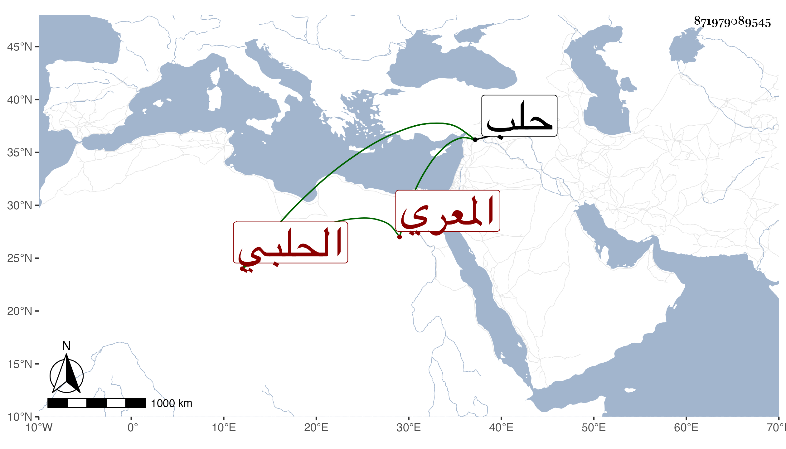

0902Sakhawi.DawLamic.ITO20230111-ara1.EIS1600.871979089545
Biography ID: 871979089545
488
محمد بن علي بن عبد الرحمن بن معالي بن إبراهيم الشمس بن العلاء المعري ثم الحلبي . ولد في سنة خمس وسبعين وسبعمائة وسمع من الشهاب بن المرحل . وحدث سمع منه الفضلاء وكان عاقلا مشهور العدالة متكسبا بالشهادة متقنا لصناعتها أحد شهود قلعة حلب والجرائد فيها مباشرا بجامع منكلي بغا . مات قريب الخمسين تقريبا . وفي تاريخ حلب ممن أجاز للبرهان الحلبي عبد الرحمن بن معالي ابن أسد بن أبي القسم الأرموي المعري المؤذن وأظنه جد هذا ويحتمل أن يكون غيره .
